OLAY, CD İZLEME, ARAŞTIRMA VE TESPİT TUTANAĞI
15.04.2022 günü saat 12:59 sıralarında Pendik Yenişehir Polis Merkezi Amirliğimize intikal eden 2022/1310 Faili Meçhul AÇIKTAN HIRSIZLIK olayı ile ilgili olarak; Müşteki Doğan EKŞİ ifadesinde; Ben halen Çamlık mahallesi Meşe sokak No:12/4 F Pendik sayılı adreste bulunan Migros isimli mağazanın yetkilisi olurum. Dün yani 14.04.2022 günü akşam saatlerinde mağazamızda yaptığımız sayımlarda bir kaç alkol ürününün eksik olduğunu tespit ettik. Bunun üzerine mağazamıza ait güvenlik kamera görüntülerini incelediğimizde 13.04.2022 günü saat 18:35 sıralarında mağazamıza 3 erkek şahsın geldiği. Bu şahıslardan bir tanesinin mağazamızın dışında beklediği diğer 2 erkek
şahsın alkol reyonundan 16 şişe çeşitli markalardan rakı ve viski alarak alışveriş aracına koyduklarını
sonrasında aynı şahısların 3 adet 1 kg ağırlığında Çaykur marka çay, 1 adet 700 gram Nutella marka çikolata
ve 1 adet 200 gram Tadım marka Antep fıstığını alışveriş aracının üzerine koyarak alkollerin üzerini
kapattığını. Sonrasında şahısların mağazanın giriş kapısından herhangi bir ödeme yapmadan ayrıldıklarını
gördük. Konu ile ilgili olarak mağazamızda ürün alarm sistemi vardır ve bütün alkol ürünleri üzerinde alarm aparatı bulunur. Ancak şahıslar mağazadan çıkış yaparken alarmın neden çalışmadığını bilmiyorum. Olaya ilişkin güvenlik kamera görüntülerini rızam ile polis merkezine teslim ediyorum. Olayı gerçekleştiren şahısları tanımam.
Olayda sorumlusu olduğum mağazanın yaklaşık 6binTL zararı vardır. Mağazamızdan çalınan ürünlerin faturası mevcuttur ve talep edilmesi durumunda faturalarını sunabilirim. Sorumlusu olduğum mağaza adına olayı gerçekleştiren şahıslardan Şikayetçiyim şeklinde beyanda bulunmuştur.
Polis Merkezimiz Suç Araştırma Soruşturma Büro Amirliğimize bağlı görevlilerce 20/04/2022 günü yapılan görüntü izlemesinde;
13.04.2022 günü saat 18:35 sıralarında Yenişehir Polis Merkezi Amirliğine intikal eden idaremiz Çamlık Mah. Meşe Sok. No:12 Pendik/İSTANBUL sayılı adreste meydana gelen 2022/1310 suç numaralı AÇIKTAN HIRSIZLIK olayı ile ilgili kamera görüntüleri polis merkezimizde bulunan bilgisayar ortamında bilirkişi olmaksızın incelendiğinde; -Bahse konu olay ile ilgili olay yerinden rızaen tarafımıza teslim edilen görüntülerde; Camera-CH16-20220413183200-20220413185555 isimli görüntü dosyasında 13/04/2022 günü kamera saatine göre 18:33:00 da siyah montlu kot pantolonlu 1.şüpheli erkek şahsın söz konusu hırsızlık olayının gerçekleştiği Migros isimli işyeri önüne geldiği, Migros mağazasına ait giriş kapısı önünde bulunan alışveriş
arabalarından birini aldığı, bu esnada söz konusu erkek şüpheli şahsın yanına lacivert montlu mavi pantolonlu 2.şüpheli erkek şahsın daha geldiği ve kamera saatine göre 18:42:00 2. Şüpheli Şahsın elinde söz konusu alışveriş arabasıyla ödeme yapmadan marketten ayrıldığı, 2. Şüpheli Şahıs
1.Şüpheli Şahıs
Sayfa 1 / 6
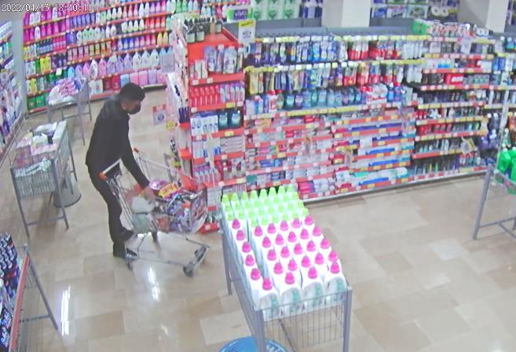
Camera-CH13-20220413183200-20220413185555
isimli
görüntü
dosyasında
13/04/2022 günü kamera saatine göre 18:39:00 da 1.şüpheli şahsın alışveriş arabasına alkol şişelerini doldurduğu, kamera saatine göre 18:40:00 da 1. Şüpheli şahsın ve 2. Şüpheli şahısın Migros Marketin çeşitli reyonlarından içki şişelerini kapatacak şekilde ürünler aldığı; 1.Şüpheli Şahıs
Çalınan Alkol Şişeleri
Görüntü kalitesinin düşük olması nedeniyle şüpheli şahısların eşkâl bilgisi alınamamış, çevrede yaptığımız araştırmalarda başkaca bir kamera sistemine ve görgü tanığına rastlanılmamış, idaremiz dâhilinde yapılan araştırmada olayı gerçekleştiren meçhul şahıs yâda şahısların kimlik tespit ve yakalamaları mümkün olmadığı anlaşılmış ve çalışmaların devam ettiği anlaşılmıştır.
Polis Merkezimiz Suç Araştırma Soruşturma Büro Amirliğimize bağlı görevlilerce tekrardan 11/05/2022 günü yapılan görüntü izlemesinde;
Sayfa 2 / 6
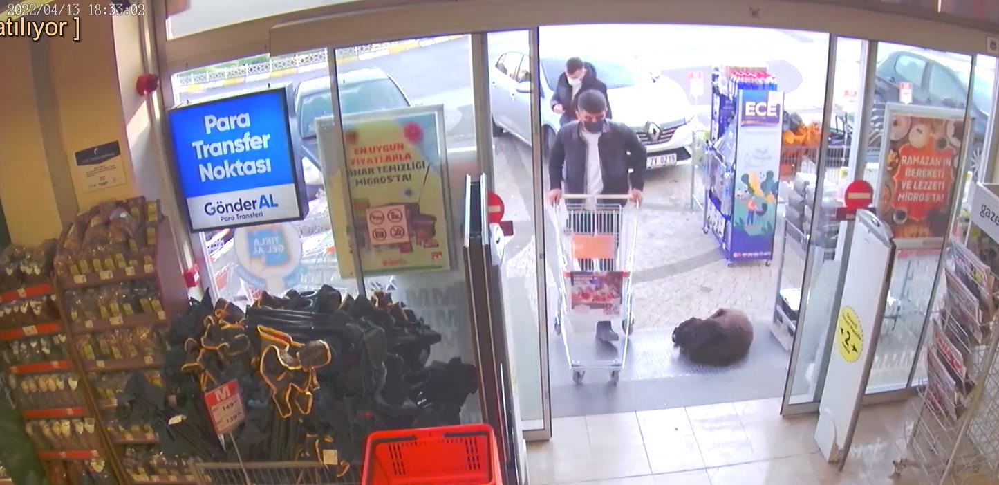
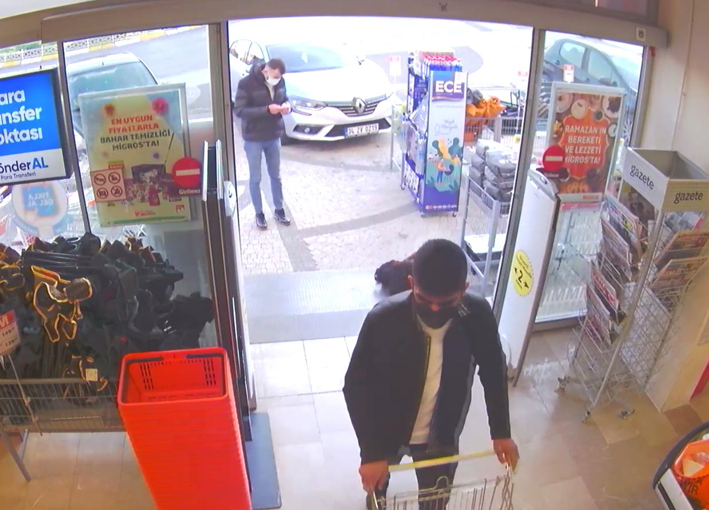
Sayfa 3 / 6
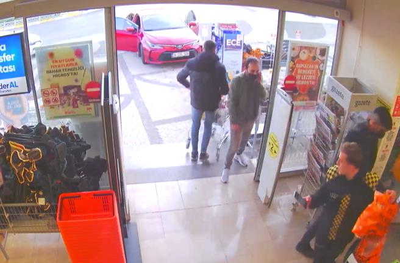
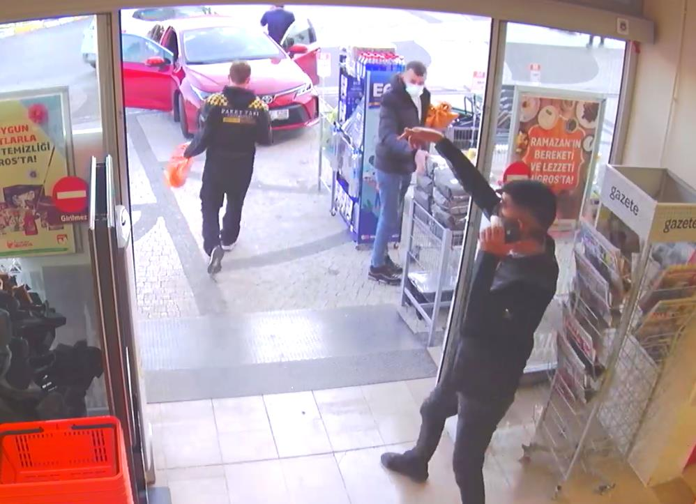
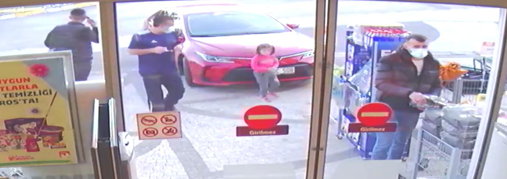
Şüphelilerin ürünleri alıp alışveriş aracına koydukları ve şüpheli şahsın çıkılmayan kapıdan (müşteri giriş kapısından) çıkmak için markete girecek şahıs beklediği, bir müşteri geldiği an çıkış olmayan kapıdan elinden ürünlerin olduğu alışveriş aracı ile çıktığı, diğer şüphelinin de bunu fırsat bilip telefonla konuşurmuş gibi yapıp çıktığı, dışarıda bir süre bekledikleri fırsat kolladıkları, dışarıda bulunan ürünlerden alışveriş
yapar gibi davrandıkları görülmüştür.
Sayfa 4 / 6
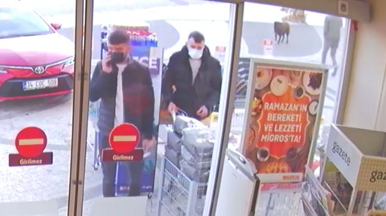
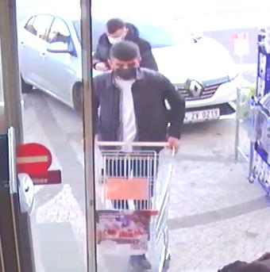
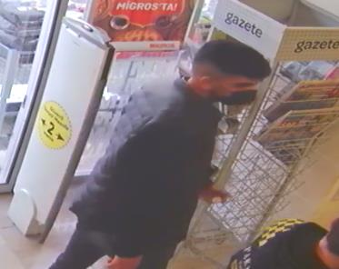
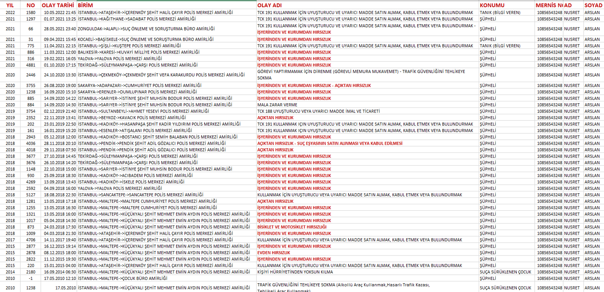
Olayı gerçekleştiren şahıslar ile ilgili yaptığımız araştırma ve soruşturmalarda; Polnet Olay Şahıs Sorgu menüsünde çapraz sorgulamalarda; bu tür olaylara çok sayıda karışan şüpheli şahısların resimleri, karıştıkları olay türleri vb kontrol edildiğinde, idaremiz dahilinde yukarıda özeti yazılan olaya karışan ve aşağıdaki resmi bulunan şüpheli şahsın; 10856543248 T.C. kimlik nolu Abdurrahman ve Nur oğlu, 19/11/1996 doğumlu (Maltepe) Erzurum Horasan Yaylacık nüf. Kay. Nusret ARSLAN olduğu kesin ve net olarak tespit edilmiştir.
10856543248 T.C. kimlik nolu Nusret ARSLAN isimli şahsın Polnet
karıştığı olaylar
Sayfa 5 / 6
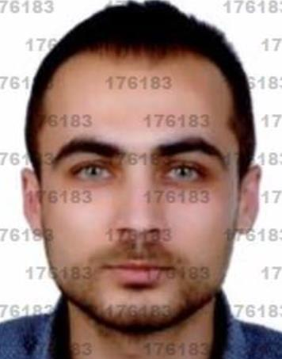
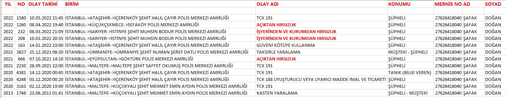
Diğer şüpheli şahsın ise yine yukarıdaki açık kimliği yazılı olan Nusret ARSLAN la suç birlikteliği olan ve çok sayıda benzer suçtan kaydı olan 27626418040 T.C. kimlik nolu, Sadık ve Leyla oğlu, 25/07/1993 doğumlu (Kadıköy), Sinop Boyabat Doğuca nüf. Kayıtlı Şafak DOĞAN olabileceği değerlendirilmiştir.
27626418040 T.C. kimlik nolu Şafak DOĞAN isimli şahsın
Polnet karıştığı olaylar
Tespit ettiğimiz şüpheliler;
Nusret ARSLAN ın MİMAR SİNAN MAH. SEMAZEN SK. NO: 8 İÇ KAPI NO: 2
SULTANBEYLİ / İSTANBUL
Şafak DOĞAN ın ise FINDIKLI MAH. ZAMBAK SK. NO: 5 İÇ KAPI NO: 1 MALTEPE
/ İSTANBUL olarak Mernis adreslerinin göründüğü anlaşılmış, şahıslar idaremiz Pendik dahilinde önemle aranmışlarsa da bulunamamışlar, yakalama çalışmalarına başlanılmıştır.
İş bu Olay, Görüntü İzleme, Araştırma ve Tespit Tutanağı tarafımızdan tanzimle altı birlikte imza altına alınmıştır. 11/05/2022 saat: 14:00
457971
176183
181549
257680
470104
Komiser Yrd.
Polis Memuru
Polis Memuru Polis Memuru Polis Memuru
Sayfa 6 / 6